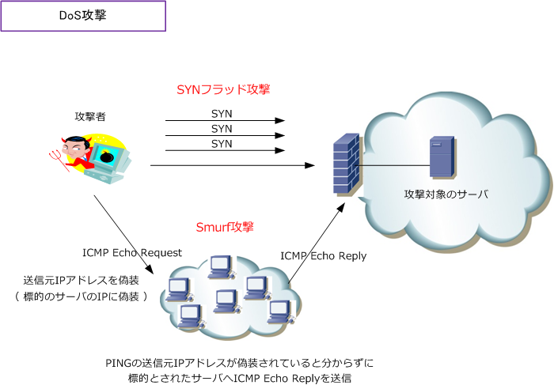

Network Security / malware / DoS / Cyber Attack
ネットワークセキュリティ：基本用語
ネットワークセキュリティを理解する上で重要な「セキュリティの基本用語」を以下に紹介します。
| セキュリティ用語 | 説明 |
|---|---|
| アカウント （ acconut ） |
コンピュータやネットワークシステムにアクセスするためにログインするための権利のこと。 アカウントは「ユーザ名」と「パスワード」から構成される。 |
| インシデント （ incident ） |
インシデントは情報セキュリティリスクが発生した事故、または脅威となる事象のこと。 ウィルス感染やデータ紛失などから、外部からの攻撃による機密情報の流出などが該当する。 |
| ウィルス （ virus ） |
ウィルスは自己伝染機能、潜伏機能、発病機能のいずれかを有する加害プログラムのこと。 広義では、ネットワークを伝わり伝染する「ワーム」などもウィルスに含まれる。 |
| エクスプロイト （ exploit ） |
エクスプロイトはソフトウェアなどの脆弱性を悪用した攻撃を行うプログラムのこと。 または、脆弱性を悪用して実際に行われる攻撃のことを意味する。 |
| 可用性 （ availability ） |
可用性とは、必要な時にデータへ安全にアクセスでき、利用可能であることを確保すること。 情報セキュリティの3要件（機密性、完全性、可用性）のひとつ。 |
| 完全性 （ integrity ） |
完全性とは、データを最新で正確な状態で、欠損や不整合がないことを保証すること。 情報セキュリティの3要件（機密性、完全性、可用性）のひとつ。 |
| 機密性 （ confidentiality ） |
機密性とは、権限を持つ限られた人だけが対象データにアクセスできるよう制限すること。 情報セキュリティの3要件（機密性、完全性、可用性）のひとつ。 |
| 脅威 （ threat ） |
脅威は、情報セキュリティを脅かして、システムに対して危害を加える要因のこと。 情報セキュリティにおける脅威は「技術的脅威」「物理的脅威」「人的脅威」の3つがある。 |
| 技術的脅威 | 技術的脅威は、情報セキュリティに技術的な手段により損害や損失を与える脅威のこと。 不正アクセス、盗聴、改ざん、なりますし、DoS/DDoS攻撃、マルウェア、ウィルスなど。 |
| 物理的脅威 | 物理的脅威は、情報セキュリティに物理的な手段により損害や損失を与える脅威のこと。 火災・停電などの事故、地震・水害などの災害、ハードウェアなどの故障、盗難、破壊など。 |
| 人的脅威 | 人的脅威は、情報セキュリティに人の行為により損害や損失を与える脅威のこと。 操作ミス、機密データ損失、社内システムの不正利用、ソーシャルエンジニアリングなど。 |
| クラッカー （ cracker ） |
クラッカーはネットワークシステムに不正に侵入して改ざんなどの行為をする人のこと。 最近では、クラッカーのことは「セキュリティ ハッカー」と呼ばれることが多い。 |
| シグネチャ （ signature ） |
シグネチャはウィルスに含まれる特徴的なデータ断片や攻撃パターンのデータベースのこと。 IDS/IPSやWAFなどの製品が、通信を検査して、通信の許可/拒否を判断する際に使用する。 |
| 脆弱性 （ vulnerability ） |
脆弱性（ぜいじゃくせい）はソフトウェアの設計ミス、不具合などで発生する欠陥のこと。 脆弱性により、本来動作しないはずの動作が行えたり、外部からの攻撃リスクが発生する。 |
| デジタル証明書 （ digital certificate ） |
インターネット上で本人確認を行うために、第三者が発行した電子的な証明書のこと。 デジタル証明書により、なりすまし、通信経路上の盗聴、改ざんなどが防止できる。 |
| バックドア （ backdoor ） |
バックドアは、サイバー攻撃で侵入した後に、次回侵入時のために設ける裏口のこと。 稼働中のデバイスに存在するセキュリティホールを利用しソフトウェアにより作られる。 |
| パッチ （ Patch ） |
パッチはセキュリティ上の脆弱性などの不具合を解消するプログラムのこと。セキュリティ デバイスの脆弱性が発見された場合、修正プログラム（パッチ）を適用し脆弱性を除去する。 |
| ペネトレーション テスト （ penetration test ） |
ネットワークに接続されているシステムに対して、脆弱性がないか侵入テストすること。 システムに対して、実際に様々な技術を駆使して侵入を試みて、脆弱性の有無を確認する。 |
| ロギング （ logging ） |
ロギングは、発生した出来事に関する情報を一定の形式で、時系列に記録・蓄積すること。 ロギングにより記録されたデータのことを「ログ」と呼ぶ。 |
| IPスプーフィング （ IP spoofing ） |
IPスプーフィングは、攻撃元を隠すために、送信元IPアドレスを偽装して通信を行うこと。 SYNフラッド攻撃やSmurf攻撃などのDoS攻撃の際、IPスプーフィングは利用されている。 |
| DMZ | DMZは内部ネットワーク、外部ネットワークの両方から隔離されたネットワークのこと。 具体的には、イントラネットとインターネットの中間部に設置するサブネットの総称。 |
| Proxy server | 内部ネットワークのPCからインターネット接続する際に出入り口で中継するサーバのこと。 内部ネットワークのPCの匿名性確保、ユーザの一元管理、フィルタリング等が可能になる。 |
| Firewall | Firewallは、外部から内部ネットワークへの不正アクセスを防止するシステムのこと。 インターネットなどの外部から、イントラネットなどの内部ネットワークを防護する。 |
| IDS | IDSは、不正アクセスなど悪意あるトラフィックを検出して通知するシステムのこと。 不正アクセスのパケットなのかの判断は「シグネチャ」のデータベースを使用する。 |
| IPS | IPSは、不正アクセスなど悪意あるトラフィックを検出し通知・破棄するシステムのこと。 不正アクセスのパケットなのかの判断は「シグネチャ」のデータベースを使用する。 |
| WAF （Web Application Firewall） |
WAFは、Webアプリケーションの脆弱性を悪用した攻撃から保護するシステムのこと。 従来のFirewall、IDS、IPSで防げなかった攻撃をWAFによりWebサイトを保護できる。 |
| 認証の三要素 | 認証の三要素とは、知識情報、所持情報、生体情報の3つの要素のこと。以下はその例。 知識情報：パスワード、認証番号、秘密の質問 所持情報：スマートフォン、ICカード、USBトークン 生体情報：指紋、静脈、顔 |
| 二要素認証（2FA） | 二要素認証（Two-Factor Authentication）は、認証の三要素のうち種類の異なる2つの 要素を使用してユーザを認証する仕組みのこと。例えば、ログインIDとパスワード認証に 加えて、スマートフォンで受信したワンタイムパスワード入力も必要となる二要素認証に することで、IDやパスワード情報が漏えいした場合でも不正アクセスを防ぐことができる。 |
| 多要素認証（MFA） | 多要素認証（Multi-Factor Authentication）は、認証の三要素のうち種類の異なる2つ以上の 要素を使用してユーザを認証する仕組みのこと。二要素認証との違いは使用する 認証要素の数だけであり、二要素認証では"2つの要素に限定"されるが、多要素認証では 2つ以上の要素を使用する認証方式で、例えば3つ以上の要素を使用した認証方式の場合、 それは多要素認証であると言える。なお、二要素認証は多要素認証の方法の一部とも 説明できることから、二要素認証のことを多要素認証として説明されている場合もある。 ・ 多要素認証の実装例 ログインIDとパスワード ＋ スマホで受信したワンタイムパスワード + Face ID 認証。 |
ネットワークセキュリティ：マルウェアの種類
マルウェアとは、不正で有害な動作を行う目的で作成された悪意あるソフトウェアの総称のことです。 マルウェアは大きく分類して「ウィルス」「ワーム」「トロイの木馬」「ランサムウェア」の4種類が あります。正確には、その他にも「スパイウェア」などもあり、それらも含めてマルウェアと言います。 ※ 悪意あるメールの添付ファイルを開いたり、不正なWebサイトに訪れることで、これらのマルウェアに感染してしまいます。
| マルウェアの種類 | 説明 |
|---|---|
| ウィルス （ virus ） |
ウィルスは、自己伝染機能、潜伏機能、発病機能のいずれかを有する加害プログラムのこと。 ウィルスは動的に活動せず、プログラムファイルからプログラムファイルへ静的に感染する。 |
| ワーム （ worm ） |
ワームは、自身を複製して他のシステムに拡散する性質を持った独立したプログラムのこと。 宿主となるファイルを必要とせず、ネットワーク経由でコンピュータに感染していく。 |
| トロイの木馬 （ Trojan horse ） |
トロイの木馬は表向き無害だが攻撃対象デバイスに侵入後、攻撃開始するプログラムのこと。 ギリシア神話のトロイア戦争の「トロイの木馬」になぞらえて名前がつけられている。 |
| ランサムウェア （ Ransomware ） |
ランサムウェアは、感染したPCをロックまたはファイルの暗号化で使用不能にして、元に 戻すために、被害者に対して身代金を支払うように要求する悪質な加害プログラムのこと。 |
| スパイウェア （ spyware ） |
スパイウェアは、ユーザに関する情報を密かに収集し、それを悪意ある外部の情報収集者に 送信するプログラムのこと。情報搾取型マルウェアであるインフォスティーラーも広義では スパイウェアの一種に含まれる。 |
ネットワークセキュリティ：マルウェアの検出方法
マルウェアへの感染による生じるデータの読み込みの動作、書き込みの動作、通信等を監視することにより アンチウィルスソフトなどがウィルスを検出する手法をビヘイビア法と言います。ビヘイビア法は実行中の プログラムの振る舞いを監視して不審な処理が行われていないか調べる方式であることから、振る舞い検知 とも呼ばれています。また、ビヘイビア法はダイナミックヒューリスティック法とも呼ばれています。
ネットワークセキュリティ：証券口座乗っ取りによる不正売買（フィッシング詐欺とマルウェア感染）
オンライン証券の口座に不正アクセスされて、中国株などを不正売買する被害がニュースで報道されました。 不正アクセスされるということは、悪意あるユーザに不正にログインIDとパスワード情報を窃取されたこと を意味します。不正にログインIDとパスワードを奪う主流な方法は フィッシング です。フィッシングとは、 メール等で偽のURLを送り付けて、偽のWebサーバに誘導してログインIDとパスワードを入力させることで 情報を奪う行為のことです。しかし、フィッシング詐欺に心当たりがないという被害者の証言があります。
その証言通りならPCがマルウェアに感染している可能性があります。具体的にはスパイウェアの一種である インフォスティーラー（ Infostealer ）に感染している可能性が高いと言えます。インフォスティーラーは Webブラウザなどに保存したログインIDやパスワードなどの認証情報を盗み出す情報窃取型マルウェアです。 情報窃取型マルウェアに感染しないための対策として、最新のウィルス対策ソフトを導入するだけではなく 迷惑メールのリンクや添付ファイルを開かないことや、海外の性的Webサイトを閲覧しないことも重要です。
また、証券会社では多要素認証（MFA）を実装しているので、それを設定することでIDやパスワード情報を 漏洩した場合でも被害を防げます。ただし、インフォスティーラーがセッショントークを窃取した場合には 多要素認証を回避される可能性があります。なお、SBI証券ではデバイス認証とFIDO認証を実装しています。
| 認証方式 | 説明 |
|---|---|
| デバイス認証 | デバイス認証はPCやスマホなど特定のデバイスが正当なものであることを確認する認証方式 のこと。ネットワークやサービスへのアクセスを許可する前に、デバイスの身元を検証する。 認証方法には、デバイス固有の識別子であるMACアドレスやシリアル番号、デジタル証明書、 トークンや生体認証などを使用する。 SBI証券で実装されているデバイス認証は、ログインできる端末（PCやスマホ）をあらかじめ 登録しておいて、アクセスしてきた端末が事前に登録しておいた端末なのかを確認する仕組み。 正当なユーザが使用する端末にサーバから識別情報を発行し、ログイン時にその情報を確認 している。なお、初回ログイン時にメールで送られる認証コードを入力して端末を登録する。 |
| FIDO認証 | FIDO（Fast IDentity Online）認証は従来のIDとパスワード認証に代わる、オンラインでの 安全かつ利便性の高い認証方式のこと。FIDO Allianceが定めたパスワードレス認証の一種で 公開鍵認証方式を用いて本人確認を行う。つまり、サーバ側に公開鍵、ユーザのデバイス側に 秘密鍵が保管されるためセキュアであり、ユーザのデバイス（例えばスマホ）で顔認証などを 行うだけであり利便性が高い。 SBI証券で実装されているFIDO認証は、多要素認証で使用されることが前提であることから、 ユーザはログインIDとパスワード入力して認証成功後にスマホで生体認証（顔認証など）を 行う流れとなる。また、FIDO認証利用前に専用アプリをスマホにインストールして認証登録 を行う必要があり、その専用アプリを使用してQRコードを読み取り、認証を行う手順となる。 |
ネットワークセキュリティ：DoS攻撃の種類
DoS（Denial-of-service attack）攻撃はサイバー攻撃の一種であり、攻撃目標のサーバに対して大量の 不正なデータを一方的に送信することで、情報セキュリティにおける「可用性」を侵害する攻撃手法です。 DoS攻撃には「SYNフラッド攻撃」「ICMPフラッド攻撃」「Smurf攻撃」などの攻撃手法があります。
| DoS攻撃の手法 | 説明 |
|---|---|
| SYNフラッド攻撃 | 攻撃対象のサーバに対し、TCP接続要求のSYNパケットのみを大量に送りつける攻撃のこと。 攻撃側は大量のSYNパケットを送り付ける際、自身のIPアドレスを偽装し送信することから 攻撃されているサーバからのSYN/ACKパケットは、攻撃者のクライアントに届くことがなく サーバはACKを受け取れず、時間切れになるまでリソースが使われリソースが不足していく。 |
| ICMPフラッド攻撃 | 攻撃対象のサーバに対し、ICMP Echo Request を短時間で大量に送りつける攻撃のこと。 攻撃側はPingコマンドを用いて大量の要求パケットを発信することによって、攻撃対象の サーバに至るまでの回線を過負荷にしたり、システムの処理能力を飽和状態にすることで アクセスを妨害する。ICMPフラッド攻撃は「Pingフラッド攻撃」とも呼ばれる。 |
| Smurf攻撃 | 攻撃対象のサーバに対し、踏み台のホストからICMP echo Replyを大量に送る攻撃のこと。 攻撃対象のサーバのIPアドレスを送信元アドレスとして偽装して、宛先にブロードキャスト アドレスを設定して送信することで、このパケットを受信した多数のホスト（踏み台）が サーバにICMP Echo Replyを送りつけて、ネットワーク帯域や処理能力に悪影響を与える。 |

DoS攻撃にはDDoS攻撃という類型があります。DDoS（Distributed Denial of Service attack）攻撃は DoS攻撃を発展させたものであり、複数のシステムを利用して大量のホストから1つのサービスに対して 一斉にDoS攻撃を行います。DDoS（ 分散型サービス妨害 ）攻撃という名称通りの攻撃手法となります。
このようにDDoSでは、標的となるサーバに対し多数のホストからネットワークを通じて攻撃することで 攻撃対象のサーバに大きな処理負荷を与えて、サーバのサービスを機能停止に追い込むことができます。 簡単に言えば、DDoSはDoSの攻撃手法を「 分散攻撃に発展させた攻撃手法 」と言えることができます。
DDoSの一種にDRDoS攻撃があります。DRDoS（ Distributed Reflective Denial of Service ）攻撃は、 分散型かつ反射型のDoS攻撃です。DDoS攻撃とDRDoS攻撃ともに多数のデバイスを使用して攻撃を行う 点では同じですが、狭義ではDDoS攻撃は直接攻撃、DRDoS攻撃は間接攻撃と説明することができます。 DRDoS攻撃は第三者のサーバを悪用しターゲットに大量のトラフィックを送りサービスを利用不能にする 攻撃です。DRDoS攻撃は、例えば、多数のDNSサーバに対して送信元のIPアドレスを標的のIPアドレスに 偽装したリクエストを送信し、それらのサーバの応答パケットにより標的のサーバのリソースを枯渇させ、 利用を妨害します。DNS増幅攻撃、NTP増幅攻撃、SSDP増幅攻撃、CLDAP増幅攻撃等がDRDoS攻撃です。
ネットワークセキュリティ：その他のサイバー攻撃手法
サイバー攻撃にはDoS/DDoS/DRDoS攻撃以外にも、以下のような攻撃手法があります。
| サイバー攻撃の手法 | 説明 |
|---|---|
| 辞書攻撃 （ dictionary attack ） |
クラッカーが不正にコンピュータのパスワードの割り出しや暗号解読に使う攻撃方法のこと。 パスワード破りのために、不正ソフトなどで辞書にある単語を片端から入力して試していく。 |
| ブルートフォース攻撃 （ brute force attack ） |
総当たり攻撃と言われる手法であり、可能なパスワードの手当り次第に試す攻撃のこと。 パスワードの文字列を1文字ずつ変えていき、可能な組み合わせを力任せに確認していく。 |
| ソーシャルエンジニアリング （ social engineering ） |
情報通信技術を使用することなく、人の心理的な隙や行動ミスから秘密情報を入手すること。 パスワードをのぞき見したり、身分を偽り管理者のふりをし機密データを盗みだしたりする。 |
| バッファオーバーフロー攻撃 （ buffer overflow attack ） |
処理能力を超えた不正なデータを送り付けることで誤作動を引き起こす攻撃方法のこと。 システムの一時的な記憶領域を狙い、大量のデータを送り付け悪意あるコードを実行させる。 |
| クロスサイトスクリプティング ( cross-site scripting ) |
Webサイトで利用されるアプリケーションの脆弱性を悪用した攻撃のこと。XSSと呼ばれる。 TwitterなどのSNSや掲示板に対して、作成した不正なスクリプトを挿入して引き起こす攻撃。 |
| フィッシング （ phishing ） |
偽のWebサーバに誘導しユーザ名、パスワード、クレジットカード情報を奪う行為のこと。 アカウント有効期限が近づいているなどの文言で、偽のURLを送り付けて情報を不正に奪う。 |
| スピアフィッシング （ spear phishing ） |
特定の個人、団体を標的にしたフィッシングのこと。フィッシングの一種。 大量配信型のフィッシングに対して、スピアフィッシングは対象を絞っている。 |
| スミッシング （ smishing ） |
SMSメッセージを利用したフィッシングのこと。フィッシングの一種。 スミッシングは「SMS phising」とも呼ばれる。携帯・スマホ利用者を攻撃対象としている。 |
| ビッシング （ vishing ） |
電話による音声案内などを利用したフィッシングのこと。フィッシングの一種。 ビッシングは「Voice phising」とも呼ばれる。音声応答システムを通じて情報を不正入手。 |
| 中間者攻撃 （ man-in-the-middle attack ） |
攻撃対象となる二者間の通信を、特別なソフトウェアを使用して不正に傍受、盗聴すること。 暗号化通信されていない場合（平文通信）に攻撃を受けやすい。検知するのが難しい攻撃。 |
| 標的型攻撃 （ Targeted attack ） |
無差別攻撃ではなく、攻撃対象を特定の組織内の情報を狙って行われるサイバー攻撃のこと。 日本では情報セキュリティ対策推進会議が定義した「高度サイバー攻撃」に含まれる攻撃。 |
| SQLインジェクション （ SQL Injection ） |
Webアプリケーションのセキュリティ上の欠陥や脆弱性を悪用して実行される攻撃のこと。 Webアプリが想定しないSQL文を実行させることでデータベースシステムを不正に操作する。 |
| サイドチャネル攻撃 （Side Channel Attack） |
電子機器が発する電磁波や、暗号化処理時の消費電力を測定するなどして、当該装置内部の 秘密情報を読み取る攻撃のこと。 |
| RLO 拡張子偽装攻撃 | 文字の表示順を変える制御文字を利用して、ファイル名の拡張子を偽装する攻撃のこと。 RLO（Right-to-Left Override）とは、Unicodeの制御記号の1つであり、横書きの文字の 流れを右から左に変更するもの。 |
| キーロガー攻撃 | キーロガーのツールで、被害者のデバイスでキーストロークを記録し攻撃者に送信する攻撃。 キーロガーは、キーボードで入力した内容を記録するソフトウェアやハードウェアの総称。 キーロガーのソフトウェアは正当に利用されることもあるが悪用されてしまうケースがある。 |
| テンペスト攻撃 | テンペスト攻撃（TEMPEST attack）とは、ディスプレイやキーボードなどの周辺機器から 発する電磁波を傍受・解析して元の情報を復元する攻撃のこと。この攻撃への対策としては、 電磁波を遮蔽することであり、シールドルーム設置や電磁波シールドケーブルを使用すること。 |
| DNSキャッシュポイズニング | DNSキャッシュポイズニングは、偽のDNS応答をキャッシュDNSサーバにキャッシュさせる ことで、悪意あるサーバに誘導しフィッシングなどを図る攻撃手法のこと。この攻撃へ対策は DNSSEC（Domain Name System Security Extensions）の導入が挙げられる。DNSSECで DNSサーバから受け取るリソースレコードに対するデジタル署名を利用し、リソースレコード の送信者とデータの完全性を検証することができる。 |
| Webスキミング | Webスキミングとは、ECサイトで使用されているWebアプリケーションを改ざんすることで ユーザがWebページのフォームに入力したデータを盗み取る攻撃のこと。クレジットカードの 情報など入力したデータはその後に攻撃者のサーバに送信される。ECサイト（Webサイト）に 不正なスクリプトが勝手に埋め込まれて、ユーザの個人情報が盗み取られるため、事業者側は WAFの導入だけでなく、サードパーティの外部サービスの利用は必要最低限とすることも大切。 |